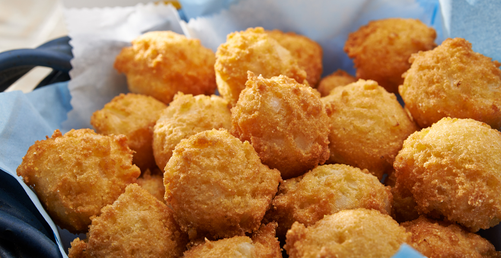

Hush Puppies

(24 - 28 Small Hush Puppies)
Description
What better to go with your seafood dinner than some delicious Hush Puppies made with “JIFFY” Corn Muffin Mix.
Ingredients
- 1 pkg. "JIFFY" Corn Muffin Mix
- 1 egg
- 1/3 cup milk
- 1/4 cup flour
- 1/2 cup onion, finely chopped
- frying oil
Steps
- Preheat oil in deep fryer to 375°F.
- Combine muffin mix, egg, milk, flour and onion. Mix well.
- Drop by teaspoon into oil.
- Fry 4 minutes (2 minutes on each side) or until golden brown.
- Drain and serve.
Return to Recipes
Return to Homepage